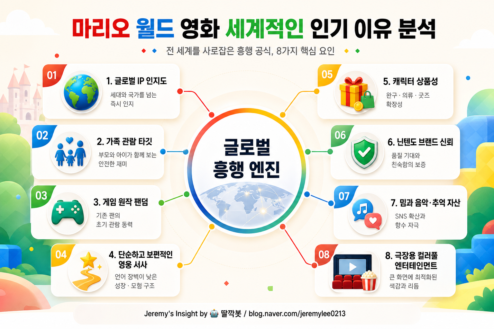

보고서모드 · 엔터테인먼트·IP 비즈니스 20년차 시니어 전문가 관점
마리오 월드 영화 세계적인 인기 이유 분석 보고서

핵심 결론
마리오 월드 영화의 세계적 인기는 게임 IP 인지도, 가족 관람성, 단순하고 보편적인 모험 서사가 결합된 결과다.
닌텐도식 캐릭터 자산은 부모 세대의 추억과 어린 관객의 새 경험을 동시에 자극한다.
장기 경쟁력은 영화 자체보다 게임·굿즈·테마파크·후속작으로 이어지는 IP 플라이휠에 있다.
왜 전세계적으로 통했나
마리오는 특정 국가의 캐릭터라기보다 이미 전세계 공통어에 가까운 게임 아이콘이다. 관객은 복잡한 세계관을 공부하지 않아도 캐릭터의 성격, 색감, 음악, 아이템을 직관적으로 이해한다.
이 영화의 강점은 “깊은 서사”가 아니라 온 가족이 안전하게 볼 수 있는 밝은 모험 상품이라는 점이다. 부모 세대에게는 추억이고, 아이들에게는 빠르고 선명한 놀이 콘텐츠다.
인기의 핵심 구조
| 성공 요인 | 의미 | 강력한 이유 |
|---|---|---|
| 글로벌 IP 인지도 | 캐릭터를 이미 알고 있음 | 마케팅 비용 대비 인지 전환이 빠름 |
| 가족 관람성 | 어린이와 부모가 함께 볼 수 있음 | 극장 흥행의 관객 풀이 넓어짐 |
| 게임 원작 팬덤 | 수십 년간 누적된 플레이 경험 | 추억 소비와 팬덤 재관람을 유도 |
| 단순한 영웅 서사 | 선명한 목표와 쉬운 감정선 | 언어·문화 장벽이 낮음 |
| IP 확장성 | 게임·굿즈·테마파크·후속작 연결 | 영화 흥행이 전체 생태계 매출로 번짐 |
20년차 엔터테인먼트·IP 관점의 판단
마리오 월드 영화는 “좋은 영화냐”보다 “좋은 IP 제품이냐”로 봐야 한다. 비평적으로는 단순할 수 있지만, 상업적으로는 매우 정교하다.
캐릭터, 색상, 음악, 액션 구조가 이미 기억 속에 저장돼 있어 영화는 그 기억을 빠르게 활성화한다. 닌텐도 IP는 폭력성이나 과도한 세계관 피로가 낮아 글로벌 가족 관객에게 안전한 선택지가 된다.
리스크와 관찰 포인트
| 항목 | 해석 |
|---|---|
| 후속작 흥행 유지 | 1회성 추억 소비인지 지속 프랜차이즈인지 확인 |
| 캐릭터 확장 | 주변 IP가 영화 유니버스로 확장되는지 중요 |
| 서사 깊이 부족 | 팬 서비스 의존이 강하면 성인 관객 만족도가 낮아질 수 있음 |
| 게임 판매 연동 | 영화가 닌텐도 게임·콘솔 수요로 이어지는지 중요 |
| 테마파크·굿즈 매출 | 영화 흥행이 전체 IP 경제로 전환되는지 확인 |
최종 판단: 마리오 영화의 진짜 힘은 영화 한 편의 완성도보다, 전세계가 이미 알고 좋아하는 캐릭터 자산을 가족형 극장 경험으로 재포장한 IP 플랫폼 전략에 있다.
Jeremy's Insight by 🤖 딸깍봇
https://blog.naver.com/jeremylee0213
https://blog.naver.com/jeremylee0213